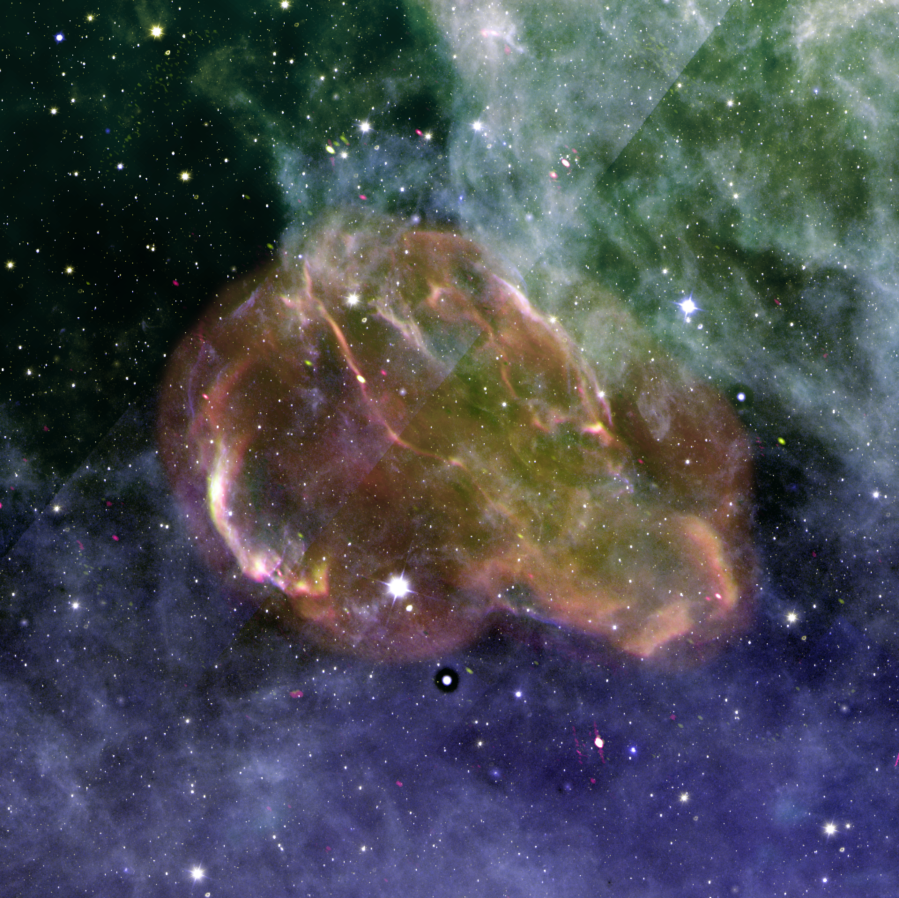

Past and Present
Research Projects
Please kindly note that this section is still a work in progress! Thank you!
-

An Empirical Calibration of M-Dwarf Elemental Compositions
I am leading a novel program using co-evolved binary star systems to calibrate these measurements from M dwarf spectra. In an FGK-M dwarf binary system, because both stars form with the same initial chemical composition, reliable abundances can be extracted using a spectral fit of the FGK star and applied to the M dwarfs. My goal in this project is to derive an empirical calibration that recovers accurate chemical abundances of all planet-forming elements in M dwarfs as a function of mass and metallicity. To do this, we have taken spectra from 24 FGK – M dwarf binary systems using SPIRou, a near infrared spectropolarimeter with a broad wavelength range and a high spectral resolution.
-

Cygnus Loop Structure
From 2021-2022, I studied a famous supernova remnant called the Cygnus Loop at radio wavelengths. Our interest in this object was motivated by its unusual structure that can be seen in the above figure with two regions: a circular explosion in the north, as well as what appears to be an outburst to the south. The two hypotheses for this are that it is the result of a blowout region into a low-density area or that it is two supernova remnants. In these structures, the high energy cosmic rays or relativistic electrons embedded in the magnetic field will emit polarized synchrotron radiation, which will appear brighter at lower frequencies. To provide indirect clues about the magnetic field structure and its properties in different locations, I produced maps of both Rotation Measure and the spectral index values.